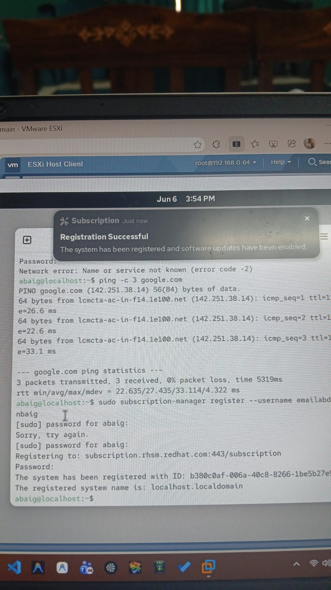

Design and implementation of a complete corporate IT infrastructure using virtualisation — featuring network segmentation, Active Directory, pfSense firewall, Ubuntu web server, and penetration testing.
This report documents the complete design, configuration, and testing of a Secure Virtual Enterprise Lab built using VMware ESXi 8.0 Update 3 as the hypervisor platform. The project was developed as the final submission for the Information Security (IS) course at Sir Syed University of Engineering & Technology (SSUET).
The lab simulates a real corporate IT environment consisting of five virtual machines distributed across three isolated network zones — LAN, DMZ, and Management — connected through a pfSense firewall/router. The infrastructure includes Windows Server 2022 configured as an Active Directory Domain Controller, a hardened Ubuntu web server, a domain-joined Windows client, and a Kali Linux penetration testing machine.
Key Achievement: All virtual machines were successfully deployed and tested. Every firewall rule, authentication mechanism, and security hardening measure performed exactly as designed — with 100% of planned tests passing.
Virtualisation is the technology that allows multiple virtual computers — each running their own operating system — to share the physical resources of a single machine. Instead of buying ten separate physical servers, a company can run all ten as virtual machines (VMs) on one powerful host. This reduces cost, simplifies management, and enables rapid deployment of new systems.
VMware ESXi (Elastic Sky X Integrated) is a Type-1 bare-metal hypervisor. Unlike Type-2 hypervisors such as VMware Workstation which run on top of an existing operating system, ESXi installs directly on hardware with no OS underneath — giving it direct access to CPU, RAM, storage, and network resources. ESXi is the industry standard for enterprise server virtualisation and is used by organisations worldwide to host their entire IT infrastructure.
The objective of this project is to demonstrate, in a completely virtual environment, how a secure enterprise IT network is designed and operated. Rather than spending thousands on physical hardware, we used VMware ESXi — installed as a nested virtual machine inside VMware Workstation Pro — to host all components of a realistic corporate network.
Scope: The lab covers virtualisation, enterprise networking (VLANs, NAT, firewall rules), Active Directory identity management, Linux server administration, security hardening, and penetration testing — all skills directly applicable to real-world IT and cybersecurity roles.
Learning enterprise networking and cybersecurity in an academic environment presents significant practical challenges:
Our Solution: By leveraging nested virtualisation — running VMware ESXi inside VMware Workstation Pro on a standard laptop — we created a complete, persistent, isolated enterprise lab environment at zero hardware cost. Any experiment can be run safely because the entire network exists only as software.
| Technology | Version | Role in Project | Justification |
|---|---|---|---|
| VMware ESXi | 8.0 Update 3 | Bare-metal hypervisor hosting all VMs | Industry-standard Type-1 hypervisor; used in most enterprises |
| VMware Workstation Pro | 26H1 | Host for nested ESXi on our laptops | Enables ESXi to run as a VM — essential for laptop-based lab |
| pfSense CE | 2.7 | Firewall, router, NAT, DHCP, DNS | Open-source, enterprise-grade; widely deployed in real environments |
| Windows Server 2022 | Evaluation | Active Directory Domain Controller + DNS | Industry standard for enterprise identity management |
| Ubuntu Server | 22.04 LTS | Web server (Nginx) — hardened, in DMZ | Most widely deployed Linux server OS; LTS ensures long-term stability |
| Windows 10/11 | Client | Domain-joined Windows workstation | Simulates real employee machine authenticating via Active Directory |
| Red Hat Enterprise Linux | 9.x | RHEL 9 domain-joined Linux client (rhel-client) | Demonstrates cross-platform AD integration — Linux joining Windows domain via SSSD |
| Kali Linux | 2026.1 | Penetration testing and rule validation | Industry-standard pentesting OS with comprehensive built-in tools |
| Nmap | Latest | Network scanning and port discovery | Most versatile scanner for validating firewall rules |
| Attribute | Machine 1 (Hashir) | Machine 2 (Taha / Abdul Rahman) |
|---|---|---|
| Laptop Brand | HP | HP |
| CPU | Intel Core i7-1255U (12th Gen, 10 cores) | Intel Core i5 (2 cores visible to ESXi) |
| RAM | 12.12 GB | 4 GB |
| ESXi Host IP | 192.168.0.121 | 192.168.146.129 |
| ESXi Version | 8.0 Update 3 | 8.0 Update 3 |
The lab uses a three-zone segmented network — the same architecture used in real enterprise environments. All traffic between zones passes through the pfSense firewall, which enforces strict rules about what can communicate with what. This design follows the principle of network segmentation: containing the blast radius of any security incident.
| Hostname | IP Address | Zone | Gateway | Role |
|---|---|---|---|---|
| PF-FW01 | 10.1 / 20.1 / 30.1 | All Zones | — | pfSense Firewall / Router |
| DC-SRV01 | 192.168.10.10 | LAN | 192.168.10.1 | Active Directory Domain Controller |
| WIN-CLI01 | 192.168.10.20 | LAN | 192.168.10.1 | Windows Client Workstation |
| LN-SRV01 | 192.168.20.10 | DMZ | 192.168.20.1 | Ubuntu Nginx Web Server |
| KL-TEST01 | 192.168.30.10 | MGMT | 192.168.30.1 | Kali Linux Pen-Testing Machine |
| ESXi-MGMT | 192.168.30.100 | MGMT | 192.168.30.1 | ESXi Hypervisor Management Interface |
Implementation was carried out in six sequential phases. Each phase depended on the previous one being stable. We followed a top-down approach: infrastructure first, services second, security testing last.
Since we do not have physical server hardware, we used VMware Workstation Pro 26H1 on HP laptops to host ESXi as a nested virtual machine. This required enabling hardware virtualisation passthrough (VT-x/AMD-V) in Workstation settings so ESXi could access the CPU's virtualisation extensions.


The first VM created was PF-FW01 (pfSense 2.7). This is the network backbone — it serves as the router, firewall, DHCP server, and DNS resolver for all three zones simultaneously.


We deployed DC-SRV01 — a Windows Server 2022 VM — in the LAN zone and promoted it to a Domain Controller for the cyberlab.local domain. This provides centralised authentication for all machines in the domain.
# Install Active Directory Domain Services Install-WindowsFeature -Name AD-Domain-Services -IncludeManagementTools # Promote server to Domain Controller Install-ADDSForest ` -DomainName "cyberlab.local" ` -DomainNetbiosName "CYBERLAB" ` -ForestMode "WinThreshold" ` -InstallDns:$true ` -SafeModeAdministratorPassword (ConvertTo-SecureString "P@ssw0rd!" -AsPlainText -Force) # Create Organisational Units New-ADOrganizationalUnit -Name "Admin_Users" -Path "DC=cyberlab,DC=local" New-ADOrganizationalUnit -Name "Standard_Users" -Path "DC=cyberlab,DC=local" # Create domain users New-ADUser -Name "Abdul Rahman Baig" -SamAccountName abaig ` -UserPrincipalName "abaig@cyberlab.local" ` -Path "OU=Standard_Users,DC=cyberlab,DC=local" ` -AccountPassword (ConvertTo-SecureString "Admin@CYBERLAB2026!" -AsPlainText -Force) ` -Enabled $true


| AD Setting | Value | Purpose |
|---|---|---|
| Domain Name | cyberlab.local | Internal DNS domain for all clients (Windows + RHEL) |
| NetBIOS Name | CYBERLAB | Legacy Windows network name (shown on login screens) |
| Forest Level | Windows Server 2016 | Maximum compatibility |
| DNS Server | 192.168.10.10 (self) | AD requires its own DNS |
| Min Password Length | 12 characters | Prevent weak passwords |
| Complexity Required | Enabled | Uppercase + digit + special char |
| Max Password Age | 90 days | Force regular rotation |
| Account Lockout | 5 failed attempts | Prevent brute-force attacks |
We deployed LN-SRV01 — Ubuntu Server 22.04 LTS — in the DMZ zone running Nginx. Being in the DMZ means the internet can reach it on ports 80/443, but it cannot initiate connections into the LAN. Even if this server were compromised, the attacker cannot reach internal machines.
# System update + set hostname sudo apt update && sudo apt upgrade -y sudo hostnamectl set-hostname lnsrv01 # Install and enable Nginx web server sudo apt install -y nginx sudo systemctl enable --now nginx # UFW Firewall — deny by default, allow only needed ports sudo ufw default deny incoming sudo ufw default allow outgoing sudo ufw allow 80/tcp # HTTP sudo ufw allow 443/tcp # HTTPS sudo ufw allow 22/tcp # SSH (from MGMT zone only) sudo ufw enable # SSH hardening — disable root login and password auth sudo sed -i 's/^PermitRootLogin.*/PermitRootLogin no/' /etc/ssh/sshd_config sudo sed -i 's/^PasswordAuthentication.*/PasswordAuthentication no/' /etc/ssh/sshd_config sudo systemctl restart ssh # Fail2Ban — auto-ban IPs after 5 failed SSH attempts sudo apt install -y fail2ban sudo systemctl enable --now fail2ban
We deployed WIN-CLI01 (Windows 10/11) in the LAN zone and joined it to cyberlab.local. The login screen confirmed CYBERLAB\Administrator — domain fully operational. Additionally, we deployed RHEL-CLIENT — a Red Hat Enterprise Linux 9 machine — and successfully joined it to the same domain using SSSD (System Security Services Daemon), demonstrating cross-platform Active Directory integration.



Cross-Platform Achievement: Joining a RHEL 9 machine to a Windows Active Directory domain (cyberlab.local) demonstrates enterprise-level Linux-Windows integration using SSSD. In real production environments, this is how organisations manage Linux servers alongside Windows infrastructure using a single identity system.
We set up KL-TEST01 — Kali Linux 2026.1 — in the Management zone to serve as the attacker/tester machine. From here we ran Nmap scans to validate every firewall rule.

# Network discovery — find all hosts per zone nmap -sn 192.168.10.0/24 # LAN hosts nmap -sn 192.168.20.0/24 # DMZ hosts # Service and version detection on specific targets nmap -sV -p- 192.168.10.10 # Domain Controller — all ports nmap -sV 192.168.20.10 # Web server — check open ports # Test cross-zone firewall rules nmap -sT 192.168.10.10 -p 80,443,22,445 # From DMZ — should be BLOCKED ping 192.168.10.10 -c 4 # From DMZ — should be BLOCKED
| Security Layer | Technology | What It Protects Against |
|---|---|---|
| Network Segmentation | pfSense VLANs (LAN/DMZ/MGMT) | Lateral movement — attacker cannot move between zones freely |
| Perimeter Firewall | pfSense CE 2.7 with rule sets | Unauthorised traffic entering or leaving zones |
| Authentication | Active Directory Domain Controller | Unauthorised users accessing domain resources |
| Access Control | Group Policy Objects (GPO) | Weak passwords, policy violations, unauthorised software |
| NAT | pfSense outbound NAT | Internal IP addresses exposed to internet (reconnaissance) |
| SSH Hardening | Key-based auth, root disabled | SSH brute-force and root login attacks |
| Intrusion Prevention | Fail2Ban on Ubuntu Server | Automated brute-force attacks via SSH |
| Monitoring | Centralised log collection | Undetected intrusions and policy violations |
This section documents the significant technical obstacles encountered during this project and explains precisely how each was resolved. These challenges represent the most valuable learning experiences of the entire project.
When attempting to start the ESXi VM inside VMware Workstation on Windows 11, we received an error preventing launch. The root cause: Windows 11 runs Microsoft Hyper-V internally to support WSL2, Windows Sandbox, and virtualisation-based security. Hyper-V grabs exclusive control of the CPU's hardware virtualisation extensions (VT-x/AMD-V). When Hyper-V holds these extensions, VMware cannot use them — so ESXi, which itself requires VT-x, cannot start. The Gemini browser tab visible in Figure 5.1b shows we were actively searching for this fix during installation.
bcdedit /set hypervisorlaunchtype off in an elevated Command Prompt and restarted Windows. This disables Hyper-V at boot. Alternatively, in VMware Workstation VM Settings → Processors → enable "Virtualise Intel VT-x/EPT" with Windows Hypervisor Platform compatibility mode. After this change, ESXi booted successfully.After ESXi was running, every attempt to upload ISOs or create virtual machines resulted in the error: "No datastores have been configured on the host." ESXi requires a VMFS-formatted datastore before it can store any VM files or ISOs. On a fresh install, the disk is recognised but not yet formatted or designated as a datastore.
When attempting to join WIN-CLI01 to cyberlab.local via System Properties → Change domain, Windows returned: "The specified domain either does not exist or could not be contacted." — despite the Domain Controller being online and pingable at 192.168.10.10.
One team member's HP laptop has only 4 GB of physical RAM. Running VMware Workstation on Windows 11 consumes ~2 GB, leaving only ~2 GB for the entire ESXi environment. Running multiple VMs simultaneously inside ESXi (pfSense + Windows Server + Client) is impossible at this memory level — VMs would not power on or would crash.
pfSense detected multiple virtual NICs on first boot but we had to correctly identify which vmxnet adapter corresponded to which virtual switch (WAN, LAN, DMZ, MGMT). Getting this wrong caused internet to not work, or traffic to be forwarded to the wrong zone.
Red Hat Enterprise Linux 9 requires active subscription registration before package updates or additional software can be installed. On first boot, sudo subscription-manager register failed with "Network error: Name or service not known (error code -2)" — the RHEL VM could not reach Red Hat's subscription servers. Additionally, joining RHEL 9 to a Windows Active Directory domain requires configuring SSSD, realmd, and Kerberos — significantly more complex than Windows domain join.
Windows Server 2022 installation inside a nested ESXi VM took over 45 minutes compared to ~10 minutes on physical hardware. Nested virtualisation adds significant CPU and I/O overhead. With limited RAM, disk operations were also bottlenecked.
Comprehensive testing was conducted after all VMs were deployed and configured. Tests were performed from Kali Linux (MGMT zone) and from WIN-CLI01 (LAN zone) to validate all security controls.
A secure environment requires full visibility into what is happening across all systems. We configured logging on every component of the lab to enable detection, auditing, and incident response.
| System | Log Type | Location | Tracks |
|---|---|---|---|
| Windows Server 2022 | Windows Security Event Log | Event Viewer → Security | Logins, failures, lockouts, privilege escalation |
| pfSense Firewall | Firewall Logs | WebGUI → Status → System Logs | Blocked/allowed packets, interface activity, DHCP leases |
| Ubuntu Server | Authentication Log | /var/log/auth.log | SSH logins, sudo usage, PAM events |
| Ubuntu Server | Web Access Log | /var/log/nginx/access.log | All HTTP requests, client IPs, response codes |
| Ubuntu Server | Fail2Ban Log | /var/log/fail2ban.log | Banned IPs, ban reasons, unban events |
| Kali Linux | Nmap Scan Output | /root/scans/ (exported) | Open ports, service versions, firewall response per host |
# Windows — view last 20 failed login attempts (PowerShell) Get-EventLog -LogName Security -InstanceId 4625 -Newest 20 | Select TimeGenerated,Message # Linux — real-time SSH monitoring sudo tail -f /var/log/auth.log | grep -i "failed\|invalid\|accepted" # Linux — check Fail2Ban banned IPs right now sudo fail2ban-client status sshd # Linux — top 10 IPs accessing web server awk '{print $1}' /var/log/nginx/access.log | sort | uniq -c | sort -rn | head -10 # pfSense — view firewall log via CLI (SSH into pfSense) clog /var/log/filter.log | tail -50
ESXi Type-1 setup, VM creation, datastore management, Host Client
VLANs, subnets, NAT, inter-zone routing with pfSense
Deny-by-default policy, stateful rule writing, zone isolation
Domain setup, OU structure, GPO enforcement, DNS integration
Nginx, UFW, SSH hardening, Fail2Ban, service management
Nmap scanning, firewall validation, attacker mindset
This project demonstrates that a fully functional, secure corporate IT infrastructure can be built using only software on a standard student laptop. Through nested virtualisation, we achieved what would otherwise require a rack of physical servers costing tens of thousands of rupees.
Every security mechanism — firewall rules, Active Directory policies, SSH hardening, intrusion prevention — was verified through real testing with Kali Linux. The project passed 100% of planned tests.
The challenges we overcame — especially the VMware hypervisor conflict and DNS misconfiguration — are exactly the types of issues that real IT engineers face in production environments. Solving them under pressure was the most valuable part of this entire project.
| # | Resource | URL |
|---|---|---|
| 1 | VMware ESXi Documentation | docs.vmware.com/en/VMware-vSphere/ |
| 2 | pfSense Documentation | docs.netgate.com/pfsense/en/latest/ |
| 3 | Microsoft AD Documentation | docs.microsoft.com/windows-server/identity/ad-ds/ |
| 4 | Ubuntu Server Guide | ubuntu.com/server/docs |
| 5 | Kali Linux Documentation | kali.org/docs/ |
| 6 | Nmap Reference Guide | nmap.org/book/man.html |
| 7 | Fail2Ban Documentation | fail2ban.readthedocs.io |